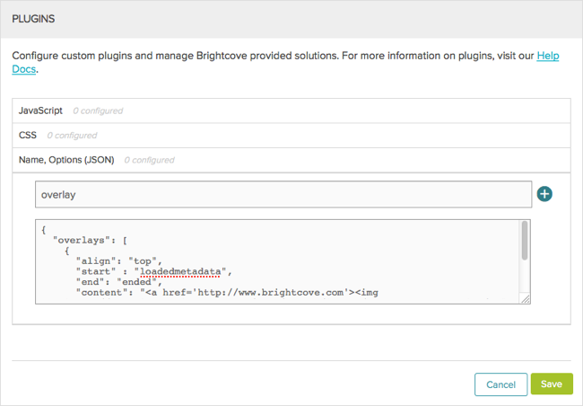

Brightcove Player Sample: Chaptered Video
This topic shows you how to use a Brightcove player with an overlay that toggles on and off by clicking on a button.
Plugins used
Note: This example uses open source video.js plugins:
- videojs-overlay : For details, refer to the Display Overlay Plugin document.
Development sequence
Select implementation
In this sample, you will test with the In-Page embed code and then move the CSS and JavaScript into a plugin. Since this example interacts with the button page element, the iframe implementation will not be used.
API resources used
The following sections detail resources used from various APIs.
Brightcove player API methods
addClass()removeClass()
Brightcove player API events
loadedmetadata
The player
How it works
The following sections explain the player, JavaScript and CSS code used in the example.
Create the player
To create a player and assign a video to it, follow these steps:
- In the Players module, create a new player or use an existing one.
For this example, you will need to add the Overlay plugin to the player:
For more information about the Overlay plugin, see the Display Overlay Plugin document.
- Locate the Plugins section and click Edit.
- The JavaScript for the Overlay plugin is provided and will not change for different plugin implementations. For the JavaScript URL, enter:
http://players.brightcove.net/videojs-overlay/lib/videojs-overlay.js
- The CSS for the Overlay plugin is provided and will not change for different plugin implementations. For the CSS URL, enter:
http://players.brightcove.net/videojs-overlay/lib/videojs-overlay.css
- For the Name, enter overlay.
Enter the plugin options. The example below displays a clickable overlay image at the top of the player when the player is loaded. You'll use JavaScript in later steps to initially hide this overlay.

- Click Save and then Publish the player.
- In the Media module, select a video and publish it with this player.Assign video content to the player and publish it.
- Copy the In-Page embed code and paste it into a new HTML file.
For details on how to get this embed code, see the Quick Start to Brightcove Player document.
The embed code should look like this:
The HTML code
Add the following HTML code to your page code.
- Line 45: Adds a button named Toggle Overlay. In a later step, you will add an event listener to this button.
The JavaScript code
Add the following JavaScript to your page code.
- Line 53: Gets a reference to the Toggle Overlay button on the page.
- Line 56: Gets a reference to the player when it is ready.
- Lines 58-60: Initially hide the overlay.
- Line 62: Adds a listener and a function for the button click event.
- Lines 64-66: Hides the overlay.
- Lines 68-70: Shows the overlay.
The stylesheet
This example uses CSS styles for the Brightcove player.
- Lines 23-25: Hide the overlay.
- Lines 27-30: Set the dimensions of the player.
Use a plugin
It is a best practice to use a plugin so that you can easily add this functionality to multiple players.
Create the JavaScript file
Move the plugin's JavaScript code into a file and place it in an Internet accessible URL.
- Create a new file for your plugin JavaScript code. In this case, name it
overlay-button.js. - Cut and paste the JavaScript code from your main HTML file into this new file.
- Lines 84,109: Wrap your JavaScript code using the
videojs.plugin()function. The first argument,overlayButton, is the plugin name. - Line 86: Gets a reference to your player.
- The rest is your JavaScript code which was reviewed in a previous section.
Note: Line 109: Has a trailing semicolon at the end of the plugin's JavaScript code which is required.
- In the HTML file, add the following code just below the existing
<script>tags. This code includes the JavaScript file and then calls the method defined in that JavaScript.
- Browse the HTML page. You should see that the Toggle Overlay button still works, except now your JavaScript code has been removed from the HTML page.
Create the CSS file
Move the CSS styles into a file and place it in an Internet accessible URL.
- Create a new file for your CSS styles. In this case, name it
overlay-button.css. - In the
<head>section of your HTML file, add the following link to include your newly created CSS file.
- Browse the HTML page. You should see that the Toggle Overlay button still works, except now your styles has been removed from the HTML page.
Deploy plugin and CSS
To deploy the overlay button Plugin using the Players module, follow these steps:
- In the new Video Cloud Studio, open the Players module and locate the player.
- Click the link for the player to open the player properties.
- Locate the Plugins section and click Edit.
- For the JavaScript URL, enter the URL which specifies the location of where you saved your plugin's JavaScript.
- For the CSS URL, enter the URL which specifies the location of where you saved your plugin's CSS.
- For the Name, enter overlayButton.
- This plugin has no options, so you can leave the plugin options section blank.

- Click Save and then Publish the player.


Use iframe
It is a best practice to use the iframe player implementation. If it is possible for this example, replace the In-Page embed implementation with the iframe implementation.
Since this example uses JavaScript code that manipulates elements on the page, an iframe implementation will not work.